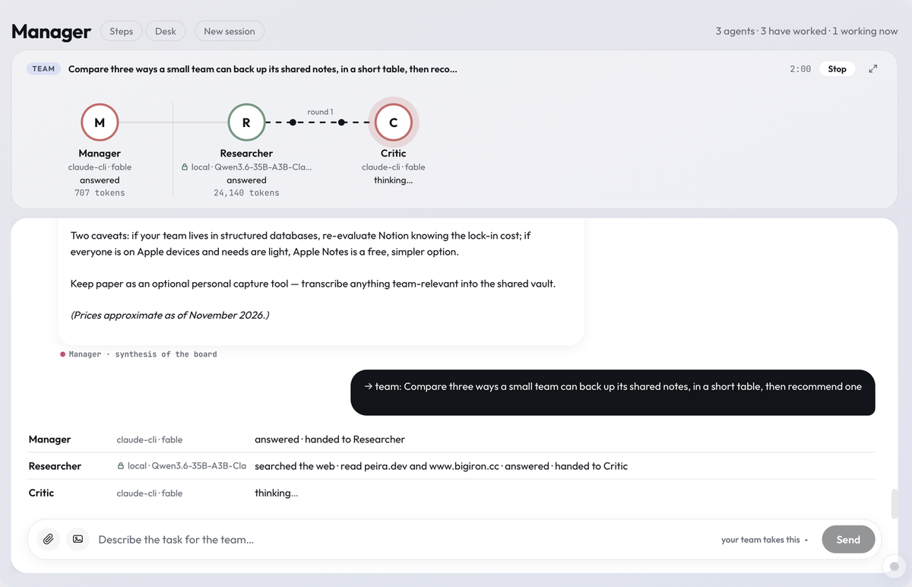
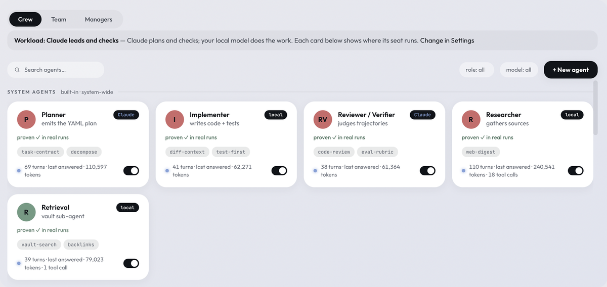
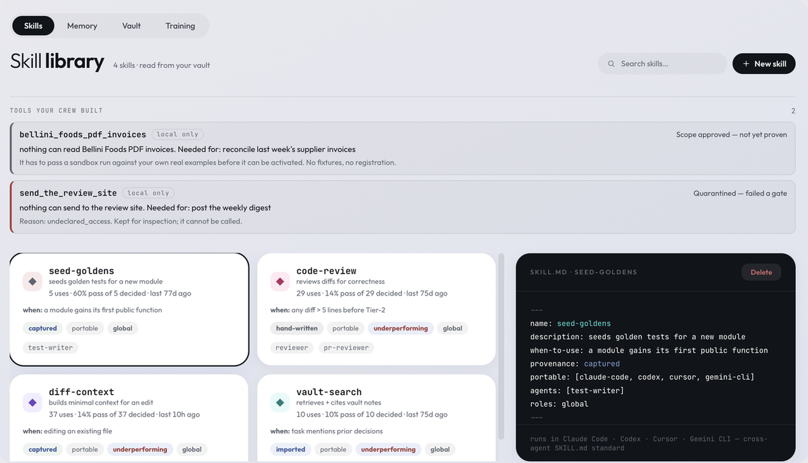
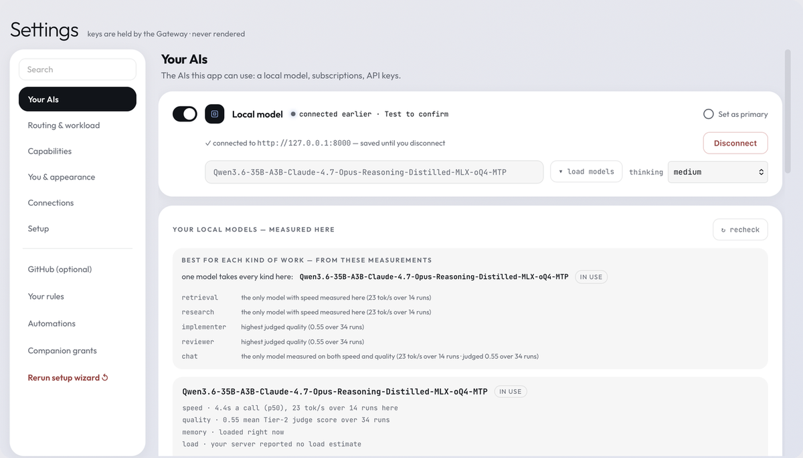
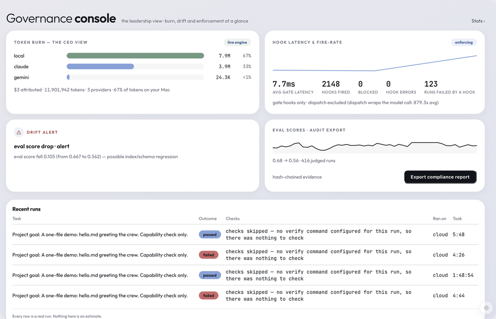
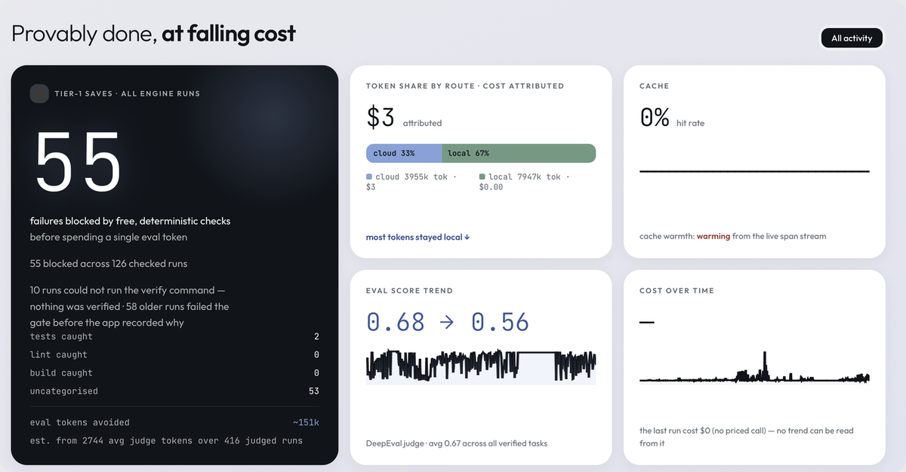

How one run works
Five stages, and a floor that is checked before any of them route.

SC Prism · macOS · solo alpha
Many agents, many models, one shared board — and a record of exactly what each one did. Deterministic code chairs every multi-agent run; a model never controls models. Your own tests decide what counts as done, not the model that did the work.
Free and open source · signed · macOS 14+ on Apple Silicon. Bring your own AI: a Claude or ChatGPT subscription, API keys, or a local model server. Ships with no keys and phones home to nobody.
Not "AI is unreliable" — something narrower and more annoying.
Give an AI a real job and it works for a while, then tells you it's done. Sometimes it is. Sometimes it wrote a file that doesn't compile, cited a page it never opened, or quietly skipped the hard part. Telling the difference means redoing the work yourself, which defeats the point.
SC Prism is built on the opposite arrangement: the model doesn't get to decide when it's finished.
Five stages, and a floor that is checked before any of them route.
Captures of the build you can download, in ordinary use — not mockups. Each frame is the working area of the window; the sidebar is left out because on the Work page it lists the author's own projects by name. Nothing inside a frame was retouched, and no figure was altered — every number is what the app measured on the runs behind it.



SKILL.md format, so a skill written for another runtime works here,
and each card says how it has really scored. A tool the crew writes itself stays inert until
it passes four gates.


The "falling cost" half of the thesis, and the part of it that already runs.
Every run that passes emits one training record — the task, the trajectory, the tools used, the verdict, and a reward computed from whether your own checks passed, how the trajectory scored, and how much of the token envelope was left. A failing run emits nothing, so the corpus is verified outcomes only.
Those records train a route policy: per task-kind weights over whether work goes to a local model or a cloud one. The artefact is a small readable file of logits, not a black box. A newly trained policy is never adopted on faith, though it is worth knowing what the gate checks: the candidate is scored against an untrained 50/50 prior rather than against the policy you currently have, on four golden fixtures shipped with the app, using a routing heuristic rather than a replay. The strict part is the regression veto — one golden going backwards discards the candidate outright, whatever the average says.
What is learned is which model should do which kind of work — never the models' weights. An adopted policy applies in Auto-route mode; with a provider pinned, the interface says the policy is not being consulted rather than implying it is live. The reward in each record is computed, not applied: it is the objective a future fine-tuning pass would optimise, and that pass is not built.
Each one is a constraint the code actually enforces.
Deterministic code chairs every multi-agent run. Agents contribute; the machinery decides whose turn it is.
Your tests and build run first, at zero tokens. When there's nothing to compile it says "skipped — nothing was checked" rather than showing a tick it didn't earn.
Text carrying a credential is pinned to your local model and cannot reach the cloud — even when you explicitly ask for cloud.
Agents, skills, projects and verdicts are plain markdown in one folder. Readable in Obsidian, diffable in git, portable anywhere.
Every subsystem is probed against a shipped bundle — not mocked, not described. This is the most recent probe pass, run against the 0.1.1 bundle. Version 0.2.0 has not been put through it again; what gates that release is the suite every commit must pass — 3,423 client tests, 57 in the Rust shell and 1,536 in the engine.
| PASS | denylist refuses rm -rf ~ | destructive command blocked pre-exec |
| PASS | containment hides API keys | unreadable |
| PASS | containment blocks self-approval | approvals intact |
| PASS | ordinary commands run | unaffected |
| PASS | web search returns results | real results |
| PASS | vault tools work | readable |
| PASS | skills catalog loads | 4 skills |
| PASS | vault recall (BM25) | 3 docs in 44 ms |
| PASS | skill allowed-tools narrows | narrowed, source untouched |
| PASS | manifest refuses wildcards | refused |
| PASS | confidential forces local | pinned to this machine |
| PASS | scope approval is inert | approving scope grants nothing |
| PASS | audit catches aliased eval | AST, not regex |
| PASS | sandbox-exec available | Gate 2 enforceable |
These passes are the product of finding real failures, not of avoiding them. A partial list of what this discipline caught: an agent whose definition asked for the web was silently denied it; keyless web search returned nothing while looking functional; two concurrent runs could fork the audit chain; a timeout claimed to kill a command's children and didn't; and the evaluation gate returned success whether or not it had blocked. Each is now covered by a test that fails without the fix.
Three layers stand between a model and your machine. Each is described as what it is, not as what would sound best.
Grants. Computer and terminal access are off until you turn them on, and an agent only holds a tool its own definition file declares.
A destructive-command denylist. Every shell command is scanned
before it executes. The list is deliberately narrow — rm -f build/tmp.o
and git push --force-with-lease run normally, because a guard that
blocks ordinary work teaches you to switch it off.
Containment. Commands run where your saved credentials are unreadable and SC Prism's own approval file cannot be rewritten — so a command can't approve itself for future tools.
The containment is a deny-list, not a sandbox. A command still runs as your user: it can read and write your ordinary files, reach the network, and use your installed tools. Verification commands you configure run outside it.
The privacy floor matches words, not meaning. It will not, on its own, recognise an unlabelled API key, an account number or a home address. For work that must never leave the machine, set the dependency dial to Local first.
The third form of an idea, and the dead end that shaped it.
The first attempt put a primary AI in charge of the other AIs. It fails for a reason worth naming: the thing you most need to trust — who decides what, in what order, with what permission — ends up delegated to the least predictable component in the system.
SC Prism inverts that. A deterministic orchestrator controls the models; a model never controls models. Every other property here follows from that one decision.
Vendor-neutral by construction — the direct answer to lock-in.
Agents to external tools and services.
Agents to each other.
Your vault to any consumer.
Reusable procedures to any agent.
A skill written for another tool works here; one written here works elsewhere. Your knowledge and capabilities are portable on day one, not after an export.
A direction, not a promise — and separated from what ships today.
This release is the solo application: one person, one machine, a full crew, on macOS. Designed for and not yet built: cross-platform desktop; a team mode where colleagues run under your governance without ever holding your keys; the same governance console widened across a team; and weight-level training that improves local models from recorded verdicts, so capability rises while cost falls.
The architecture already assumes all of it — the engine is Python, the router is Go, the surface is web technology, and the vault is a portable open-format bundle. None of it is load-bearing on macOS. What separates this from a roadmap is the rule the product runs on: a thing is described as built only when it can be demonstrated.
One person, one Mac, full crew.
This release is the solo product. Team mode is designed and not yet built: the architecture assumes it, and no member joining ships in this build. It's built by a solo founder, and it dogfoods itself: parts of SC Prism's own tooling were built by SC Prism's crew, on the record.